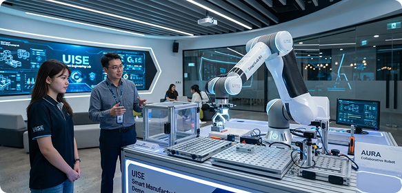

Institucional · 14 Jan 2026UISE é reconhecida com Nota Máxima MEC em visita de avaliação institucional
A comissão destacou a excelência dos laboratórios, polos e corpo docente da universidade.
Ler reportagem completa →
Comunidade UISE
Fique por dentro das últimas conquistas científicas, novidades dos campi oficiais, editais públicos de pesquisa avançada e congressos abertos na nossa comunidade acadêmica.
Matérias recentes

Institucional · 14 Jan 2026A comissão destacou a excelência dos laboratórios, polos e corpo docente da universidade.
Ler reportagem completa →Biblioteca digital amplia o acesso da comunidade a ciência de ponta.
Ler mais →Participe de simpósios, hackathons e masterclasses com líderes do setor.
Ler mais →Próximos eventos
Reunimos pesquisadores, estudantes e executivos para discutir sistemas distribuídos, dados soberanos e inteligência aplicada.